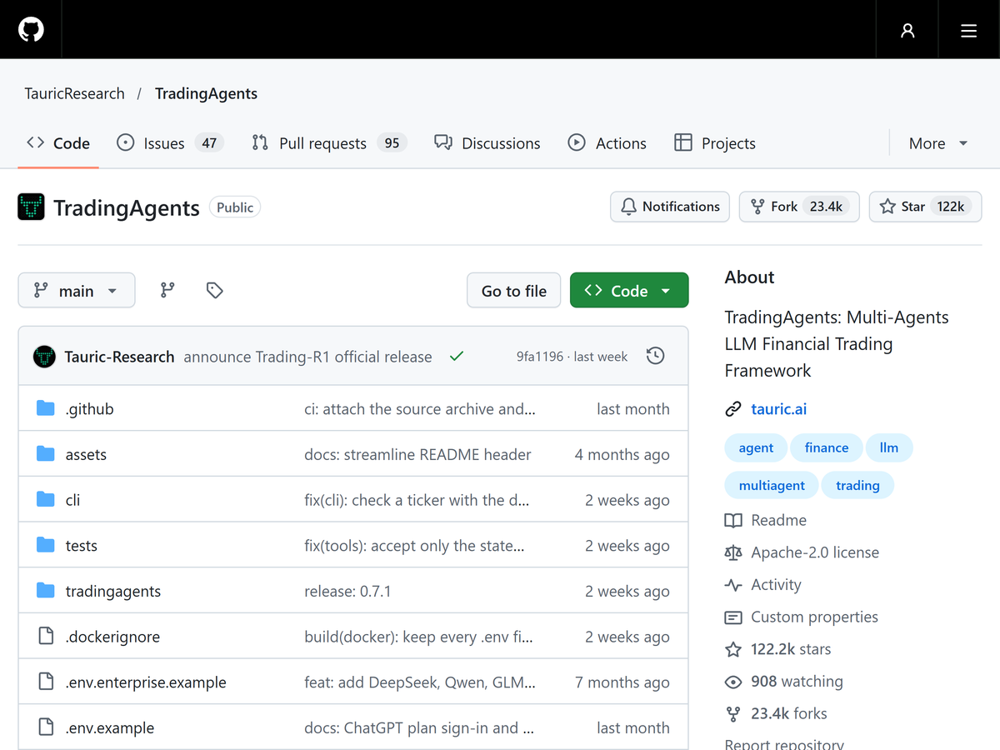
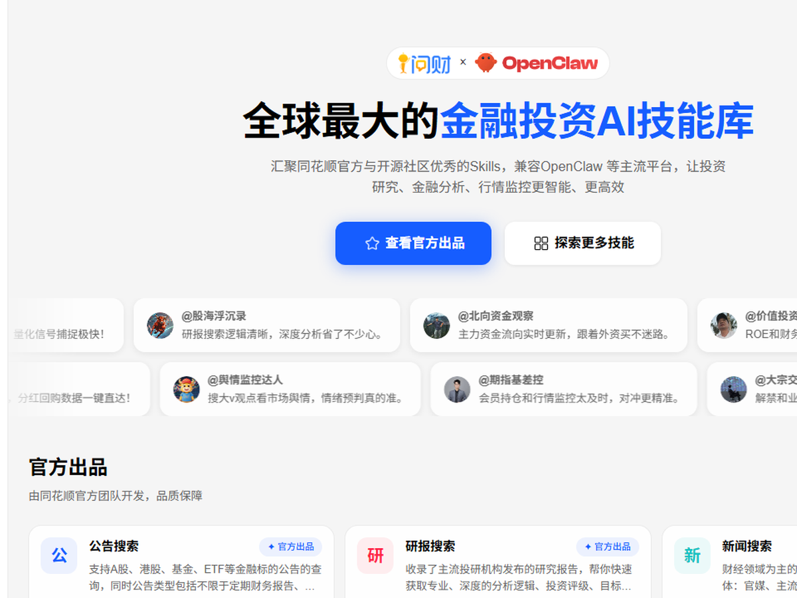
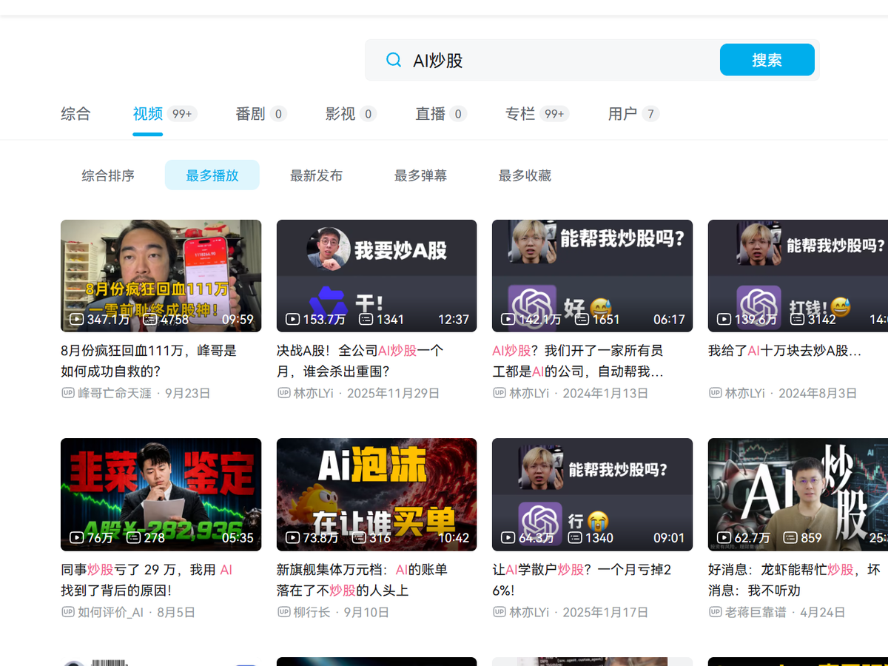
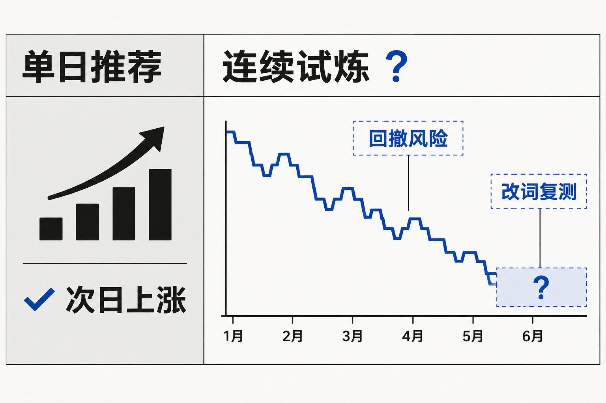
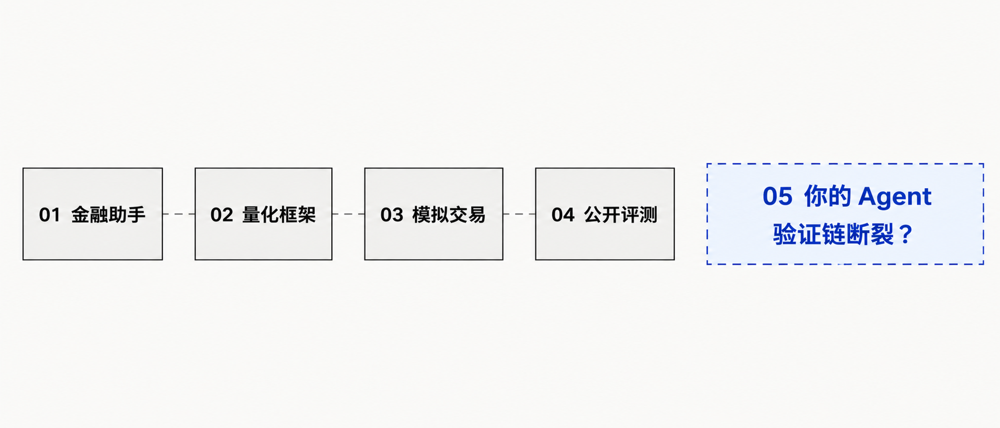
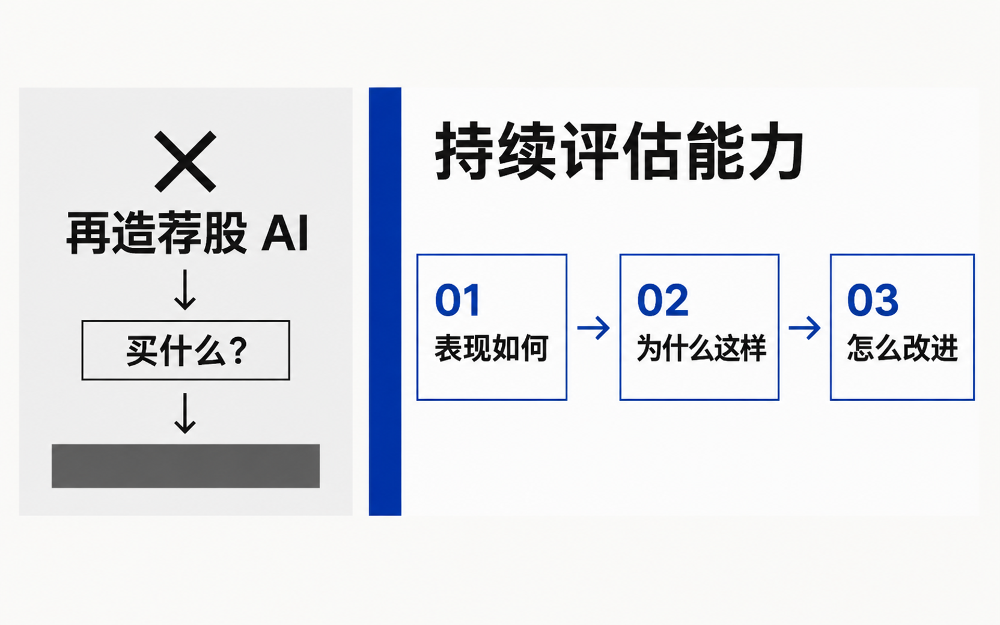
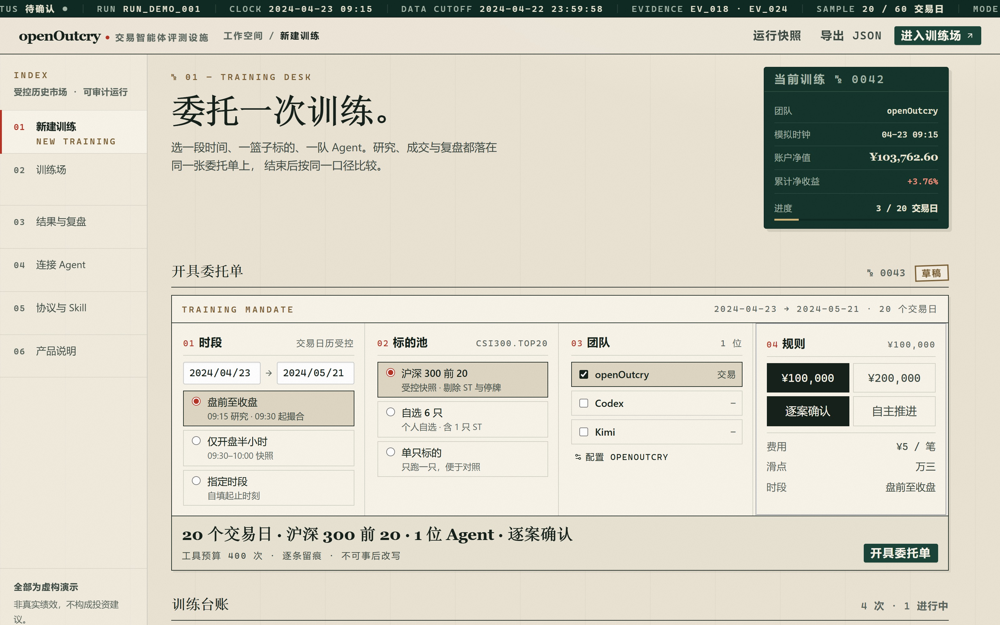
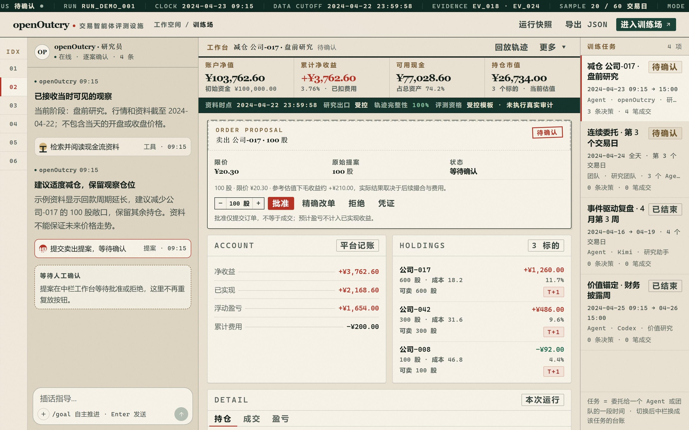
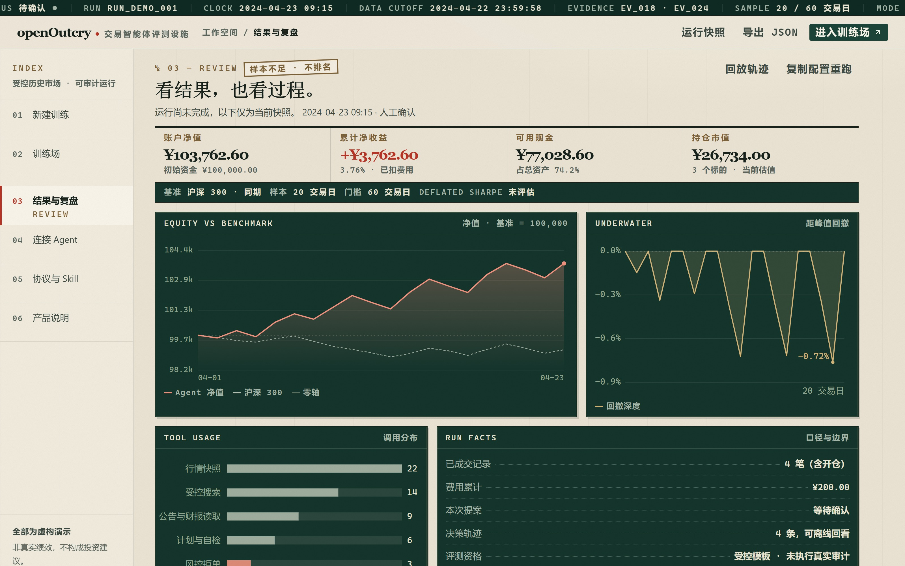
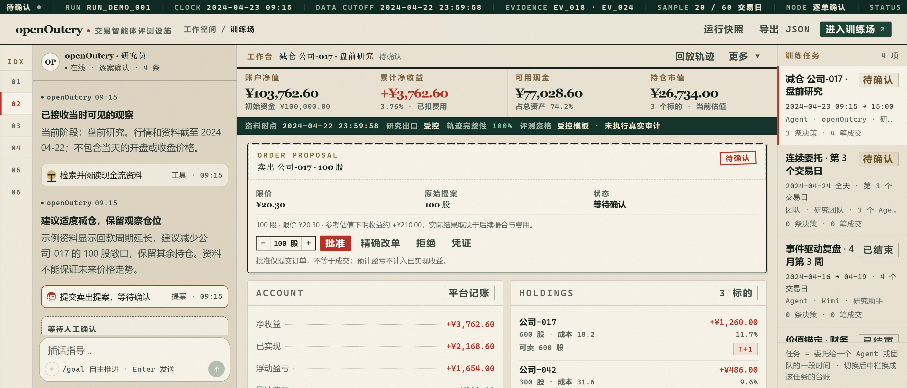

01 · GITHUB 开源社区

12.2 万+
Stars
TradingAgents · 多角色金融 Agent 框架
从金融研究、估值建模到投资决策辅助，AI Agent 正在进入真实的投资工作流。

从 GitHub 开源框架、YouTube 实测到 B 站爆款，AI 投资已经彻底破圈。

TradingAgents · 多角色金融 Agent 框架
散户 AI 实盘挑战 · CNBC 专题 42.2 万

「AI 炒股」破千条 · 实测持续霸榜
11 个完整赛季 · 78 个模型 · 3,131 笔交易 · 冠军几乎每季换人
8 月 / 10 月行情走强，榜首可跑出 +12% 左右收益。
第 3 赛季连冠军都亏 -0.63%；11 月回调 22 个模型仅 1 个盈利。
AI 绝非无所不能的股神，“vibe trading” 靠不住。
投资者并不指望 AI 稳赚不赔。真正卡住散户的是：拥有自己的投资 Agent 已经很容易，但在掏真钱之前，根本没有地方让它跑出真实结果。
接入你自己的投资 Agent，先在我们的模拟盘里看真实结果，再决定要不要信它。
Agent 推荐了一只股票，理由听起来很充分；第二天，它真的涨了。这当然令人兴奋——但一次正确的推荐，足以说明它值得信任吗？

放回过去几个月，它究竟会怎么走？
面对下跌，它能控制多少风险？
改了提示词再测，表现真的变好了吗？
一份看起来很专业的分析报告，并不能回答这三个问题。
强项：整理信息、生成分析观点。
缺口：停在单轮建议，难接连续下单检验。
强项：支持历史数据与策略回测。
缺口：偏重代码规则，难直接容纳通用 Agent。
强项：贴近实盘节奏做纸面下单。
缺口：等未来很慢，且难在同一段行情反复对照。
强项：统一题目跑出公开榜单结果。
缺口：反映他人榜单，难直接验证你自己的 Agent。

把零散工具各自成立的能力，重新接成同一条可回溯、可对照的测试链条：接入 → 历史试炼 → 理解依据 → 同条件复测。
无论普通用户还是已有 Agent 的开发者，都能以可接受的成本开始测试。
在考虑 A 股规则的历史模拟里，观察连续决策与风险，而不是评价一次回答。
不只看到收益结果，还要能回顾关键交易与决策依据，知道问题出在哪。
改配置后尽量保持测试条件一致，不把市场波动误当成改进。
用户真正缺的不是又一个“买什么”的答案，而是一种持续判断与迭代的能力。

第三部分回答一个问题：这四项目标，如何变成一套能跑起来的系统。
四项要求不是功能清单，而是系统的设计约束。
技术路径、实际完成度与测试证据，留给第三、四部分。
openOutcry 如何围绕这四项目标，设计整套系统。




不是几张静态效果图：所有页面共用同一份运行状态，操作会一致地改变事件、持仓与账户。
四个事件各有语义与副作用：改一个状态，不该让别的状态跟着乱变。
问题不再只是「它推得准不准」，而是「我能不能评估它、理解它、在可比条件下改进它」。